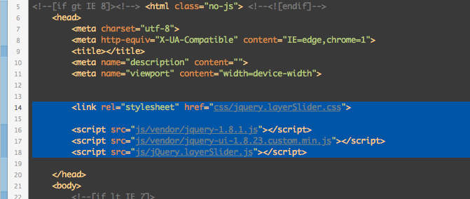
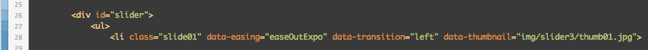
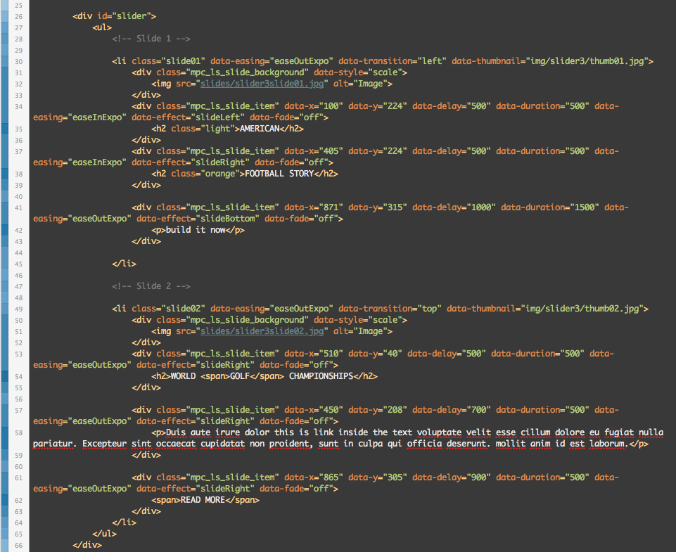
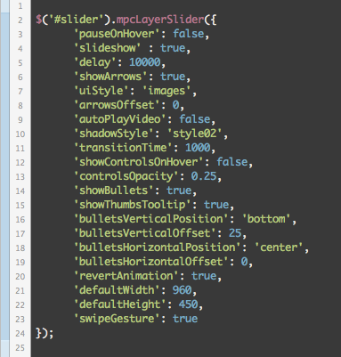

“Responsive Layer Slider” Documentation by “MPC” v1.0
“Responsive Layer Slider jQuery Plugin”
Greetings! Thank you for purchasing our plugin. If you have any questions that are beyond the scope of this help file, please feel free to ask them on our support forums.
We tried to make the help file as extensive as possible, don't be scared the Flip Book itself is really easy to use.
Have fun & enjoy,
MPC Team.
Table of Contents
- Folder Structure
- Setting Up the Slider
- Slider Structure
- Initializing the Layer Slider
- Credits
A) Folder Structure - top
Responsive Layer Slider Folder Structure:
- jQuery.layerSlider - this folder contains the full source of the slider, the required images, js & css files.
- preview - this folder contains the pre made version of the slider used in preview.
- changelog - this file contains all of the changes made to the file from the day it was released.
- documentation - this file contains the help file (which you are currently reading :)).
B) Setting Up the Slider - top
First you need to embed all of the required scripts & CSS files. Those files should be embedded in the head section of your html file like this (notice that probably the path to the files would be different for you):

B.1) Slider Structure - top
Each slider is represented by the wrapper div, inside this div you should place an unordered list. Each list item represents one slide. Each of the list items may have some special properties:

- data-easing - this parameter defines the easing type of the slides background animation,
- data-transition - choose the transition effect: slideTop, slideLeft, slideRight, slideBottom and fadeIn;,
- data-thumbnail - this parameter defines the path to the slides thumbnail
Slide represented by the list item contains set of dives each div with a class of '
mpc_ls_slide_item' is treated like a slide layer. For the slide background please use a div with a class of '
mpc_ls_slide_background'. Each layer of the slide (div with a class of '
mpc_ls_slide_item') contains some special parameters. They defines the animation of the layer, among them are:
- data-x - the X position of the div when the animation is finished,
- data-y - the Y position of the div when the animation is finished,
- data-delay - animation delay (defined in milliseconds),
- data-duration - length of the animation (defined in milliseconds),
- data-easing - easing type of the animation (defined in milliseconds),
- data-effect - defines from which side should the layer appear (if you want a fadeIn effect set it to 'none'): slideLeft, slideRight, slideBottom, slideTop;,
- data-fade - defines if the fadeIn effect should be applied to your layer (on/off).
Below you can see a slider structure with two slides:

B.2) Initializing the Layer Slider - top
To initialize the Layer Slider you need to call the mpcLayerSlider function, if you don't want to change the default behavior of the slider you don't have to pass any parameters, but if you do want to customize the slider behavior, dimension ect. then you have plenty of parameters to choose from:

- pouseOnHover - defines if the slideshow should be paused when a user hovers the slider: true/false,
- slideshow - defines if the slider should have slideshow enabled: true/false,
- delay - slideshow delay between slides (defined in milliseconds),
- showArrows - defines if the navigation arrows should be shown: true/false,
- uiStyle - choose UI style 1 - 9 (defines as string ex. '2'),
- arrowsOffset - the arrows position offset,
- autoPlayVideo - defines if the video should auto play when the slide is changed (work with Vimeo and YouTube videos): true/false
- shadowStyle - choose between 3 shadow styles: 'style01', 'style02' and 'style03',
- transitionTime - defines the background transition time between slides,
- showControlsOnHover - defines if the controls should be shown when the user hovers the slider: true/false,
- controlsOpacity - opacity of the slider UI
- showBullets - defines if the bullets should be shown in the bottom UI,
- showThumbTooltip - defines if the tooltips with thumbnails should be shown,
- bulletsVertialPosition - choose between: bottom, middle, top;,
- bulletsVerticalOffset - defines the vertical offset between the bullets,
- bulletsHorizontalPosition - choose between: left, middle, right;,
- bulletsHorizontalOffset - defines the horizontal offset between the bullets,
- revertAnimation - defines if the animation should be revert on slide change,
- defaultWidth - defines the default width of the slide area,
- defaultHeight - defines the default height of the slide area,
- swipeGesture - defines if the swipe gesture should be enabled in the slider.
E) Sources and Credits - top
I've used the following plugins and files as listed.
- Thanks to Orman Clark for lettings us use some of his Premium Pixels :)
Once again, thank you so much for purchasing this plugin. As I said at the beginning, We'd be glad to help you if you have any questions relating this plugin. No guarantees, but We'll do our best to assist. If you have any suggestions on how to improve our products or documentation please share them!
MPC
Go To Table of Contents